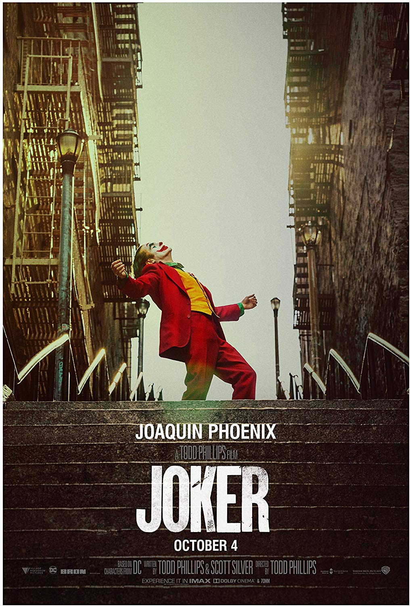
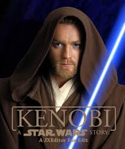
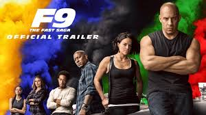
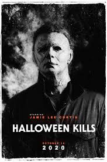

-On this site you can talk about movies (action movies).
Next marvel movie is Black Widow. That's going last movie with Nathasa Romanoff. This movie is playing between Capitan America: Civil war and Infinity war.
Director of this movie is Cate Shortland who directed Lore. The movie is coming in theatars on may 22.
But on April 3. in theatars is coming New mutants. That's going to be kind of x-men movie.
Even if the New mutants and Black Widow are going to be only marvel movies this year on December is coming first (only marvel) marvel series "Falcon and the Winter Solider".
Star Wars IX wasn't the best star wars but it wasn't the worst. About the next Star wars movie we have no clue, so that's maybe the last star wars movie.
After realising Fast and furios: Hobbos and Shaw studios started making F9. This is not the continiue of Hobbos and Shaw at all, this is other timeline.
Vin Diesel is back as Dominic Toretto. The director is Justin Lin who directed Fast and furios 6.
In this year we are going to get two horror movies (from the famous franchises). Spiral (saw) and Halloween Kills.
Hlloween Kills agin about Michael Myers is coming on the big screen on 16. October in USA.
About Spirail we khnow that one of main characters is Marcus who is playd by Samual L. Jackson. the movie is coming in theatars on May 15.
Birds of Prey comes to theatar and it was ok, but this year also is coming Wonder Woman 1984.
Gal Gbol is back as Daiana
Joker, Parasite, Marriage Story, Irishman, Jojo Rabbit, 1917
Joaquin Phoenix
Endgame, Star Wars IX, 1917, Lion King
I am pretty excited about Black Widow. Trailer seems to be good, but i don't like that in cast Tony is going to be immpotant but in the trailer we dosen't saw him at all.
Theme of this movie is exciting so I can't waut to see this movie.
About New Mutants I am not intrested. Iam probably going to watch it, but I it's not going to be something like X-men.
This news make me sad becouse I am big fan of Star Wars. But there is maybe going to be Obi Wan movie or series. Star Wars IX was good for me.
I am not big fan of Fast and furios at all, but i am excited for this. For me Hobbos and Shaw was good so I think that this is going to be better.
I can't wait to see this movies becouse I am big fan of Halloween and Saw franchises. But I think that they are not going to be good as Saw and Halloween (first parts).
For me Birds of Prey are one of biggest disappointments ever. I expect much more from this movie and why they didn't put Joker in movie, I bet then it would be much better.
I was waited so much for this trailer and it finally comes. The first part of Wonder Woman was great so I hope this one is going to be great too.
And here you can check out my quiz.
Link of the quizIf you don't likethe color of website here you can change it into brighter green.